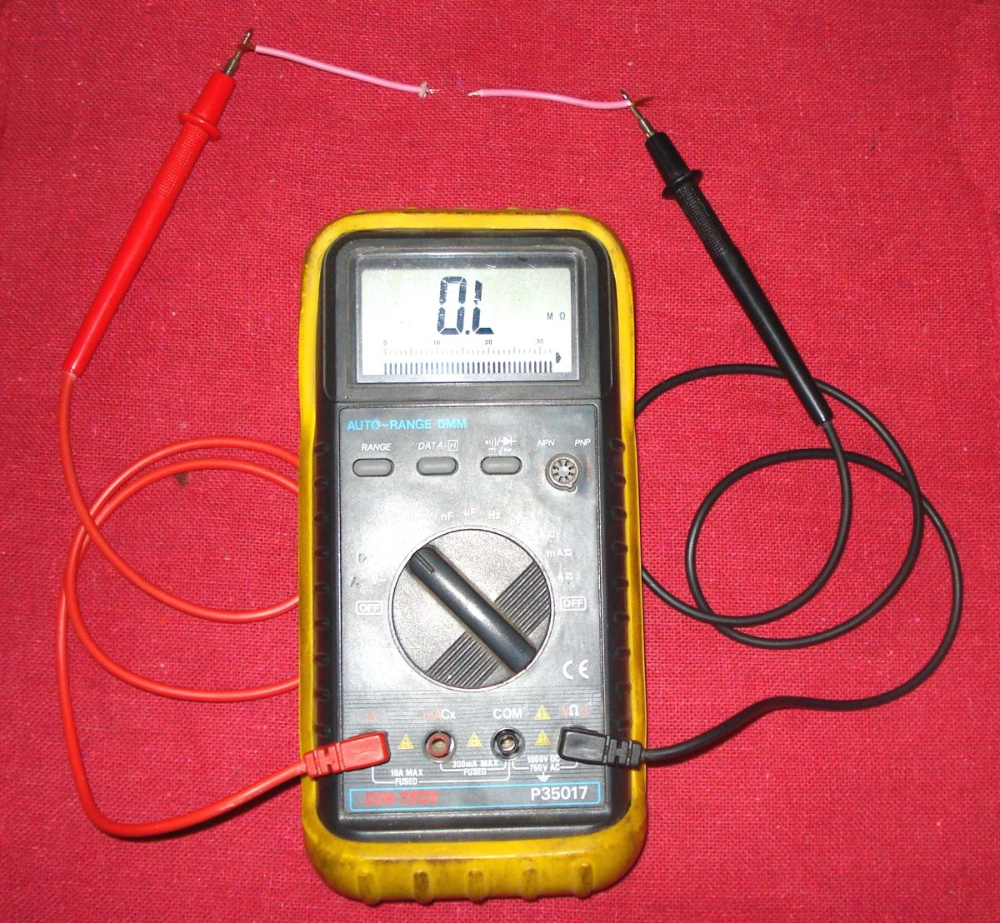

The engine stops, or stutters, when you hit a pothole or a rough patch, and often restarts straight away. A sudden cut-out on a bump is almost always electrical: a loose battery terminal, fuse, connector, switch or plug cap that loses contact for a moment. Fuel problems rarely react to bumps, except a very low tank sloshing away from the pickup.
Is it safe to ride?
With care. Until it is fixed, avoid fast roads and heavy traffic: a cut-out removes engine braking and can leave you stopped in a traffic lane.
Quick checks first
- Wiggle the battery leads with the engine running (on the stand). Does it stutter?
- Is the fuse holder tight and the fuse not loose in its clip?
- Flick the kill switch and the side stand: do they feel loose?
- Pull the plug cap: does it click firmly onto the plug?
- Do the lights or dashboard flicker at the same time?
Diagnose it step by step
1Do the lights and dashboard also go out or flicker when it cuts out?
- Yes: the main power is interrupted. Go to step 2.
- No, only the engine stops: go to step 4.
2Are the battery terminals tight and clean, and is the battery firmly held?
- No: Clean and tighten battery terminals. A loose battery can also break its own connections.
- Yes: go to step 3.
3Is the main fuse and its holder tight, and does the ignition switch cut out when you wiggle the key?
- Loose fuse or corroded holder: Check fuses and relays (K-Light 125: 20 A main fuse).
- Wiggling the key cuts out: Test the ignition switch.
- Neither: check the main earth: Clean and tighten earth connections.
4With the engine idling on the stand, flick the kill switch and tap the switch housing. Does it cut?
- Yes: Test the engine stop switch.
- No: go to step 5.
5Tap the side stand and its switch with the bike on the centre stand, in gear with the clutch pulled (or follow your bike's interlock). Does it cut?
- Yes: see Engine dies when the side stand moves.
- No: go to step 6.
6Wiggle the plug cap, the coil wires and the pick-up connector one at a time with the engine idling (do not touch the plug lead with bare hands while running; use an insulated tool). Does it stutter?
- Yes: refit the cap firmly and clean and seal the connector.
- No: go to step 7.
7. Still cutting out? Follow the harness where it bends at the steering head and under the seat: Find a wiring fault and Electrical faults come and go. If it only happens on a nearly empty tank, keep more fuel in it.
Causes, most likely first
| Cause | How to confirm | Fix |
|---|---|---|
| Loose or corroded battery terminal | Stutters when terminal is wiggled | Battery terminals |
| Loose fuse or holder | Fuse moves in its clip | Fuses |
| Worn kill switch | Cuts when housing is tapped | Kill switch test |
| Side stand switch | Cuts when stand is touched | Interlock test |
| Worn ignition switch | Cuts when key is wiggled | Ignition switch test |
| Loose plug cap or connector | Stutters when wiggled | Connector clean |
| Broken wire at steering head | Cuts at full steering lock | Wiring fault find |